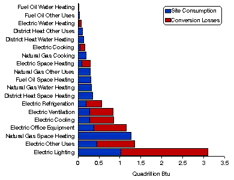

1989 Energy End-Use Intensities
Detailed Tables
Energy End Uses Ranked by Energy Consumption, 1989

Source: Energy Information
Administration, Office of Energy Markets and End Use, Forms EIA-871A through F of the 1989
Commercial Buildings Energy Consumption Survey.
Table Organization
The following 13 tables present detailed energy end-use consumption data from the 1989
CBECS. Summary tables for all major fuels (electricity, natural gas, fuel oil, and district heat)
appear first, followed by separate tables for each of the four major fuels. Within each energy
source’s group of tables, there is a table showing end-use consumption, a table showing
end-use intensities (consumption per square foot), and a table (except for fuel oil and district
heat) showing the end-use shares of total consumption.
In the major fuels end-use intensity table, the intensity denominator is total commercial building
floorspace. In the energy source-specific intensity tables, the intensity denominator is the total
floorspace of all commercial buildings receiving that specific energy source.
Row Stubs
There is a standard set of row categories (stubs), which appears in all the summary tables.
Depending on the specific table topic, the standard stub may be augmented with selected
variables pertinent to that topic. The standard stub items always appear in the same order, with
any additional stub items interspersed adjacent to the related standard stub items.
There are two types of row stubs, those that divide commercial buildings into exclusive,
nonoverlapping categories and those that indicate nonexclusive, overlapping subsets. For
example, "Climate Zone" is a set of exclusive categories; a given building belongs in only one of
these. "Energy Sources," on the other hand, is a set of nonexclusive categories; a given building
may be represented in more than one line under this stub, because the building may use more
than one energy source. The phrase "Solely or in Combination" indicates that the categories
under this row header are overlapping. Both exclusive and overlapping categories may be
nonexhaustive; that is, there may be some buildings that do not fall into any of the listed
categories.
Relative Standard Errors
Sampling error is inherent in any CBECS estimates, because the estimates are based on a
relatively small sample randomly chosen to represent a large and variable population. Sampling
errors are random differences between the survey estimate and the population value that occur
because of the particular sample that was selected by chance. The average sampling error,
averaged over all possible samples, would be zero. Although the sampling error is nonzero and
unknown for the particular sample chosen, the sample design permits sampling errors to be
estimated.
Due to the complexity of the sample design, the CBECS uses a jackknife replication method
(with 40 collapsed strata) for variance estimation. To capture variation due to unit nonresponse,
weight adjustment is performed separately within each replicate, as well as overall. The 40 sets
of replicate weights are used to compute mean square errors about the full-sample point
estimates.
The relative standard error (RSE) is the square root of the mean square error, expressed as a
percent of the estimate. The RSE’s which are displayed in the far-right columns of most tables
are based only on the total energy consumption or intensity estimates only. No RSE estimates
are provided for energy end-use estimates, since the end-use breakdown of total fuel
consumption is completely modeled. For these derived estimates, the uncertainty of the
engineering assumptions is generally greater than the sampling error. The RSE’s for end-use
energy are at least as large as that for the total fuel consumption. For more details about the
derivation of the row and column RSE factors, see Appendix B, "Nonsampling and Sampling
Errors," of the 1989 CBECS data reports.[1,2]
References
1. Energy Information Administration,
Office of Energy Markets and End Use, Commercial Buildings Characteristics 1989,
DOE/EIA-0246(89) (Washington, DC, June 1991).
2. Energy Information Administration, Office of Energy Markets and End Use,
Commercial Buildings Energy Consumption and Expenditures 1989, DOE/EIA-0318(89)
(Washington, DC, April 1992).
 To View and/or Print Reports
(requires Adobe Acrobat Reader) -
Download Adobe Acrobat Reader
To View and/or Print Reports
(requires Adobe Acrobat Reader) -
Download Adobe Acrobat Reader
If you experience any difficulties, visit our Technical Frequently Asked Questions.
You have the option of downloading all tables or selected tables.
All
Tables - (file size 388,195 bytes) pages: 67
Selected Tables
Summary tables - (file size 114,547 bytes) pages: 18.
- B1. Consumption of All Major Fuels by End Use, 1989
- B2. Energy End-Use Intensities for All Major Fuels, 1989
- B3. End-Use Consumption Percentages for All Major Fuels, 1989
Electricity tables - (file size 114,429 bytes) pages: 18.
- B4. Consumption of Electricity by End Use, 1989
- B5. Energy End-Use Intensities for Electricity, 1989
- B6. End-Use Consumption Percentages for Electricity, 1989
Natural Gas tables - (file size 83,956 bytes) pages: 15.
- B7. Consumption of Natural Gas by End Use, 1989
- B8. Energy End-Use Intensities for Natural Gas, 1989
- B9. End-Use Consumption Percentages for Natural Gas, 1989
Fuel Oil - tables (file size 49,113 bytes) pages: 8.
- B10. Consumption of Fuel Oil by End Use, 1989
- B11. Energy End-Use Intensities for Fuel Oil, 1989
District Heat - tables (file size 49,774 bytes) pages: 8.
- B12. Consumption of District Heat by End Use, 1989
- B13. Energy End-Use Intensities for District Heat, 1989


File Last Modified: April 7, 1997
- Contact:
- alan.swenson@eia.doe.gov
- Alan Swenson
- End-Use Analyst
-
- Contact:
- Joelle Michaels
- joelle.michaels@eia.doe.gov
- CBECS Manager
-
URL: http://www.eia.gov/consumption/commercial/data/archive/cbecs/cbecs3f.html
If you are having any technical problems with this site, please contact the EIA Webmaster at
wmaster@eia.doe.gov
|